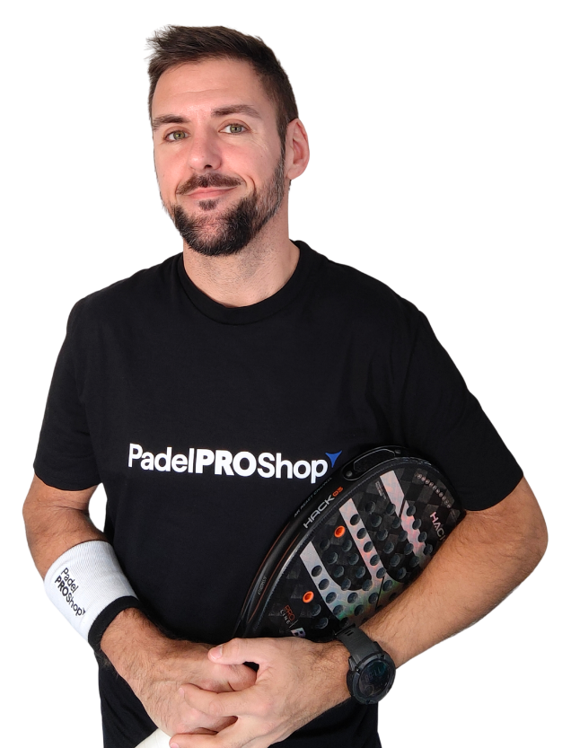

3 Ejercicios Clave para Multiplicar la Potencia de tu Remate (Smash)

Manu Carrilero
Profesor de Pádel en Valencia •
Uno de los errores más comunes que veo a diario en las pistas es intentar generar toda la potencia del remate únicamente con el brazo. Si juegas en el revés, sabes que un buen smash es vital para definir el punto, pero la fuerza real nace de la preparación física y la biomecánica de todo el cuerpo.
1. Movilidad Torácica y Hombros
Antes de entrar a pista o empuñar tu pala, necesitas amplitud de movimiento. Un ejercicio indispensable que siempre recomiendo es utilizar el foam roller para extensiones torácicas. Esto libera la zona dorsal y permite que tu hombro tenga el rango completo necesario para contactar la bola en el punto más alto.
2. Transferencia de Fuerza: Sentadilla Búlgara
La potencia del smash sube desde las piernas. Incorporar sentadillas búlgaras a tu rutina de gimnasio fortalece el tren inferior de forma unilateral. Al tener piernas fuertes, la transferencia de peso de atrás hacia adelante en el momento del impacto se vuelve mucho más explosiva y estable.
3. El Trabajo de Tríceps y Core
El "latigazo" final requiere un tríceps fuerte y un core sólido como una roca. Prueba añadir el press francés explosivo y los sit-ups en banco a tus entrenamientos. Mantener una postura sólida en el aire (o bien apoyado) evitará que pierdas inercia al golpear y protegerá tu zona lumbar.
Mi metodología en pista
Para pulir este golpe, en mis clases utilizo la máquina lanzapelotas profesional. Esto nos permite repetir el globo exactamente a la misma altura y velocidad de forma constante, para que puedas interiorizar la biomecánica del remate sin distracciones, mecanizando el movimiento perfecto antes de aplicarlo en situaciones reales de partido.